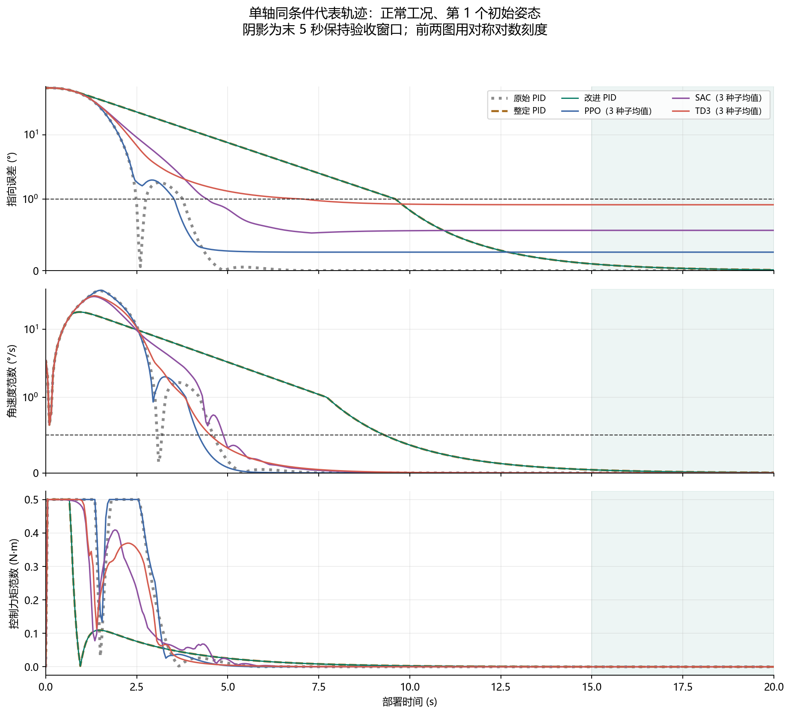
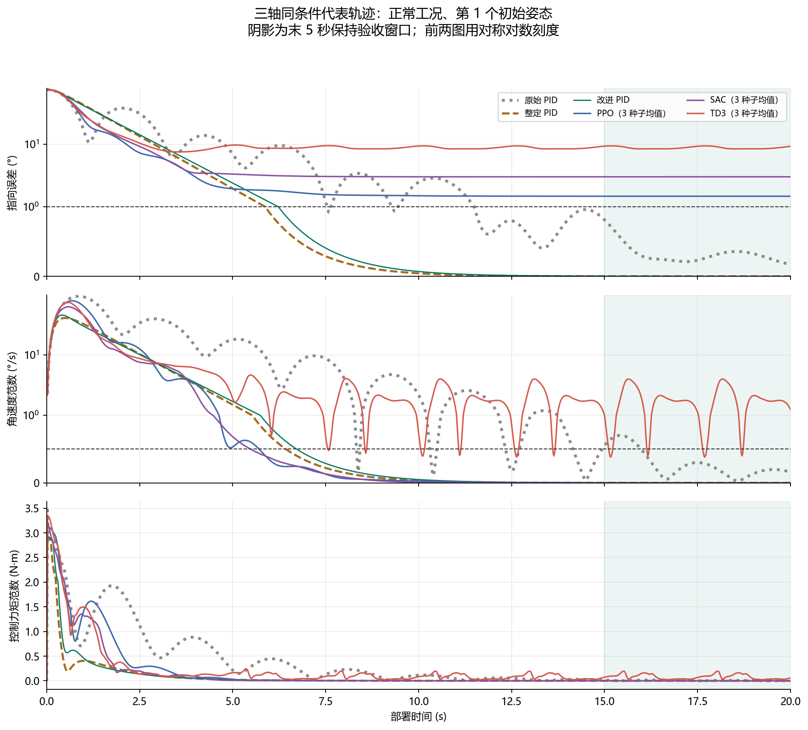
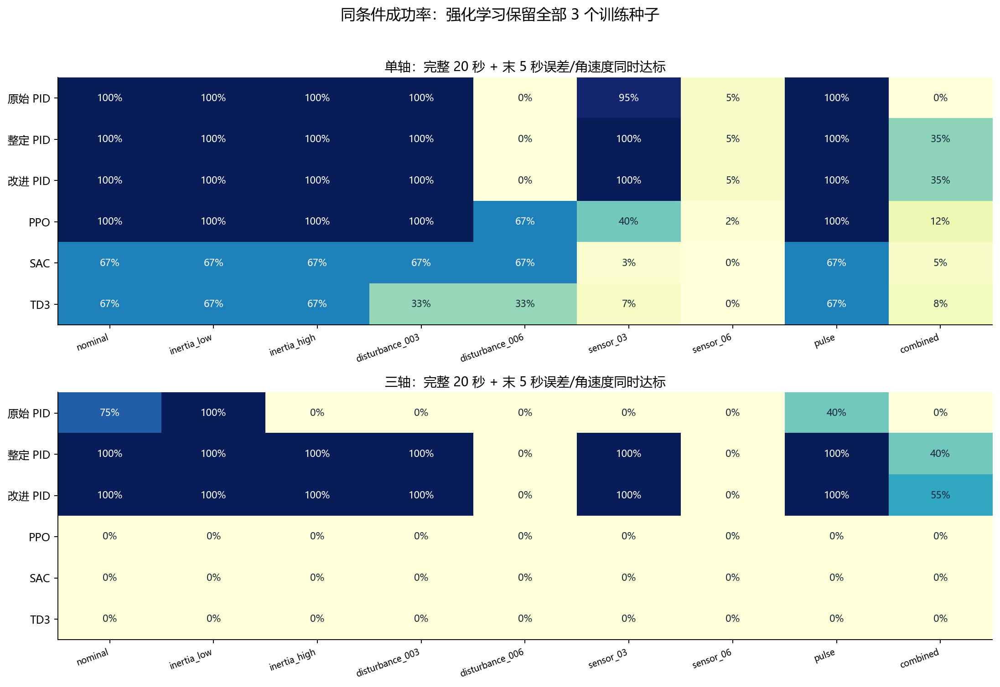
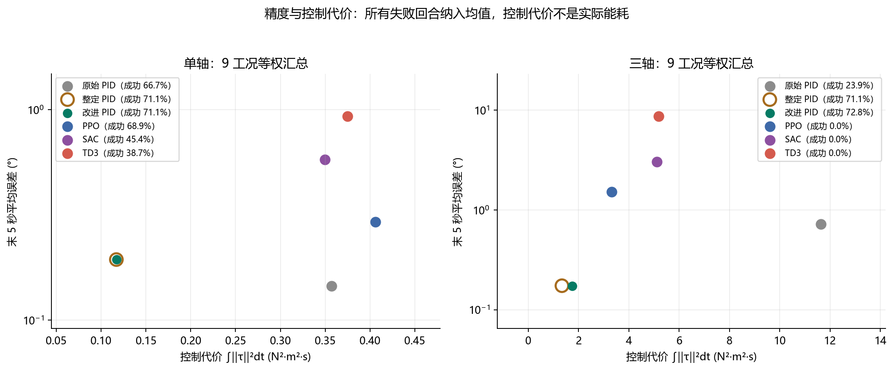
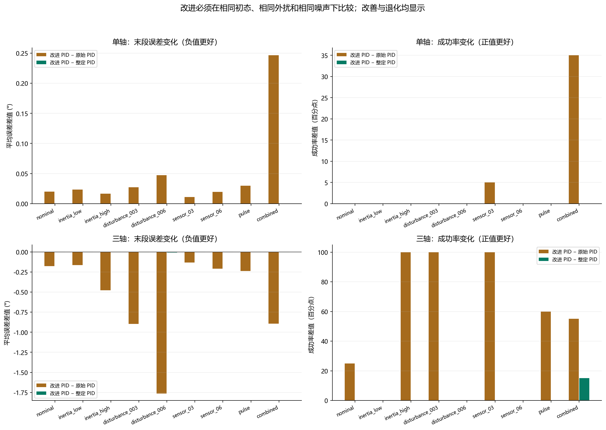
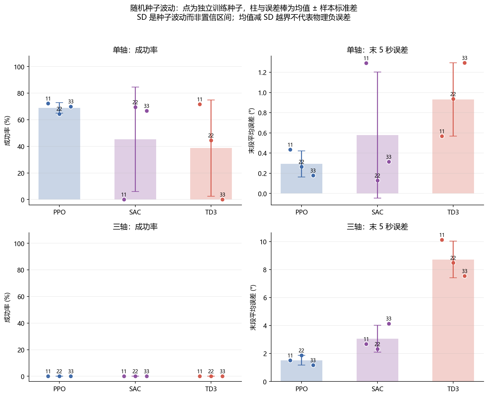
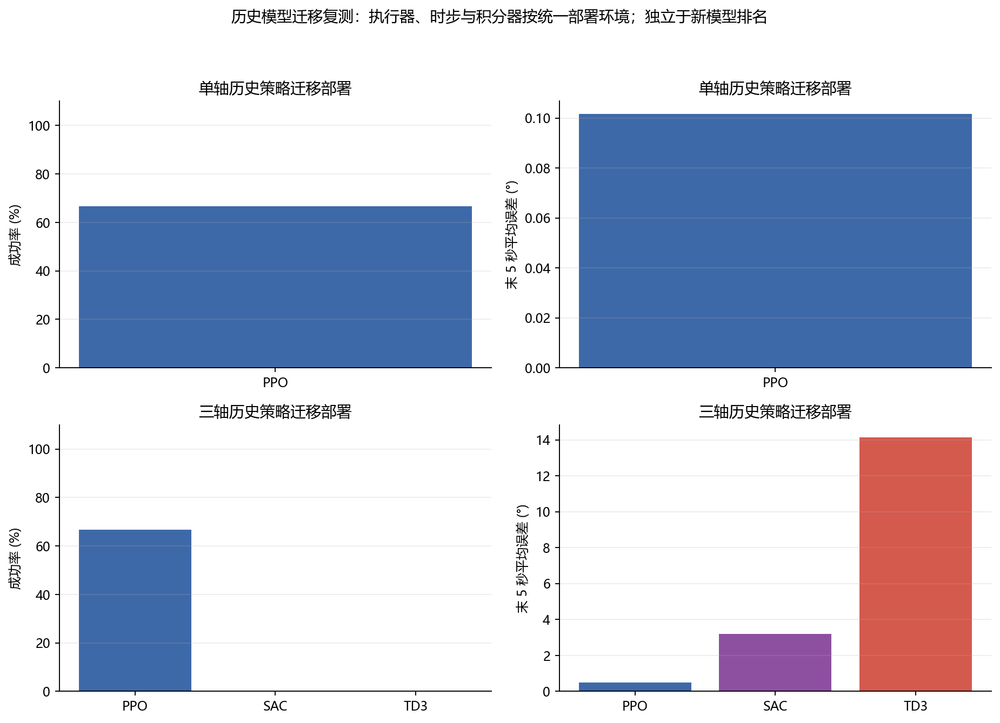
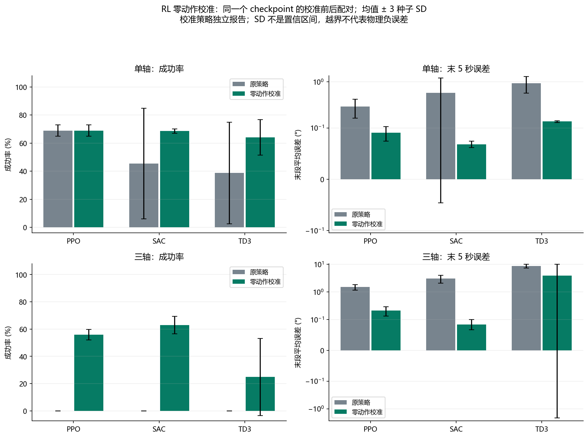

单轴与三轴：PID / PPO / SAC / TD3
正式实验 7560 回合；历史迁移部署 720 回合。相同轴数下使用共同动力学、初态、力矩限幅、扰动和传感器噪声；新学习模型全部保留 3 个训练种子。
完整分析与边界 · 运行与目录说明 · 逐回合原始数据
实际配对改进- 单轴，改进 PID 相对原始 PID：成功率 +4.4 个百分点，末段误差 0.145° → 0.194°。
- 单轴，改进 PID 相对整定 PID：成功率 +0.0 个百分点，末段误差 0.194° → 0.194°。
- 三轴，改进 PID 相对原始 PID：成功率 +48.9 个百分点，末段误差 0.724° → 0.173°。
- 三轴，改进 PID 相对整定 PID：成功率 +1.7 个百分点，末段误差 0.174° → 0.173°。
改善与退化均由实测数据计算；PID 整定与 checkpoint 选择只使用验证集。
RL 零动作校准：同 checkpoint、同种子逐回合配对- 单轴 PPO：成功率 68.9% → 68.9%，末段误差 0.293° → 0.091°；挽回 0 回合，失去 0 回合。
- 单轴 SAC：成功率 45.4% → 68.5%，末段误差 0.579° → 0.068°；挽回 125 回合，失去 0 回合。
- 单轴 TD3：成功率 38.7% → 64.1%，末段误差 0.932° → 0.138°；挽回 137 回合，失去 0 回合。
- 三轴 PPO：成功率 0.0% → 55.9%，末段误差 1.518° → 0.215°；挽回 302 回合，失去 0 回合。
- 三轴 SAC：成功率 0.0% → 63.0%，末段误差 3.055° → 0.085°；挽回 340 回合，失去 0 回合。
- 三轴 TD3：成功率 0.0% → 24.8%，末段误差 8.716° → 3.921°；挽回 134 回合，失去 0 回合。
动作 = clip(原动作 − 零观测动作, −1, 1)。原模型保留；校准是部署后处理，可能改善也可能退化，独立于原算法排名。
成功要求完整 20 秒无发散，末 5 秒误差 ≤1°且角速度 ≤0.5°/s。稳定时间仅对成功回合求均值；末段误差包含失败回合。控制代价不是实际能源。

01_response_single
01_response_three
02_success_by_condition
03_accuracy_control_cost
04_paired_pid_improvement
05_learning_seed_variation
06_historical_deployment
07_policy_calibration历史图只展示迁移部署能力，不与同预算新模型混合排名。本实验为仿真刚体，未开展硬件或飞行验证。